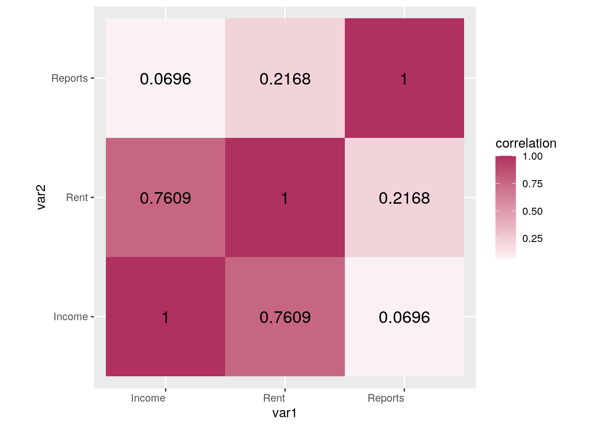
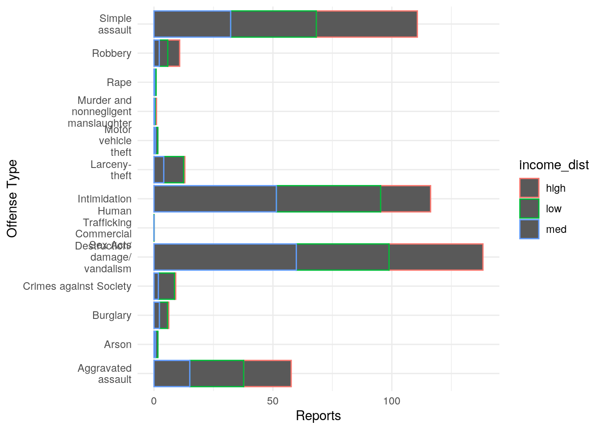
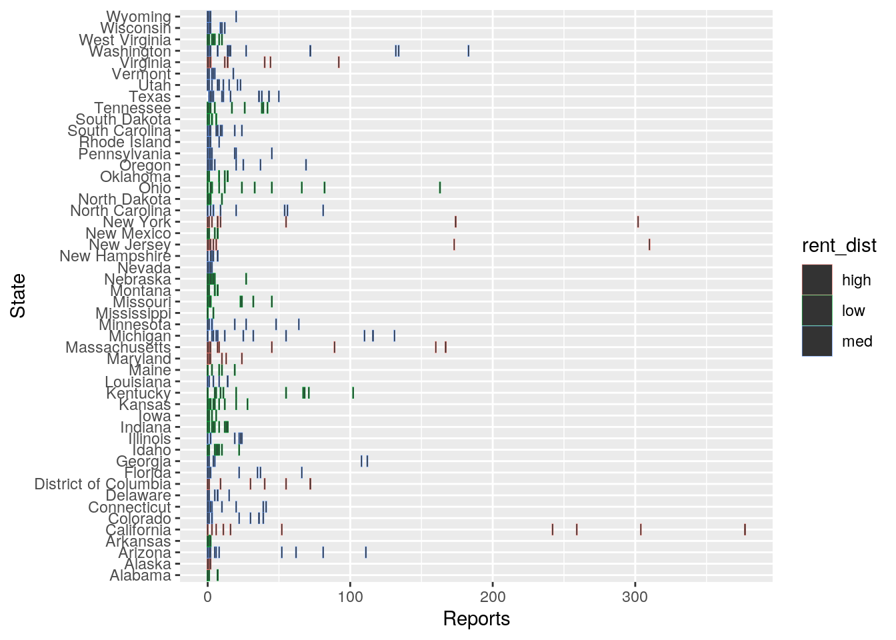
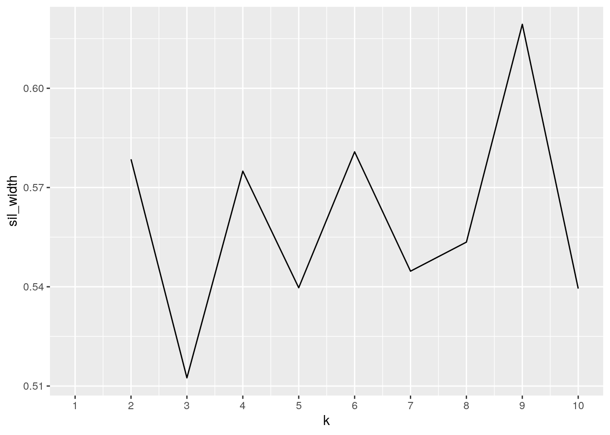
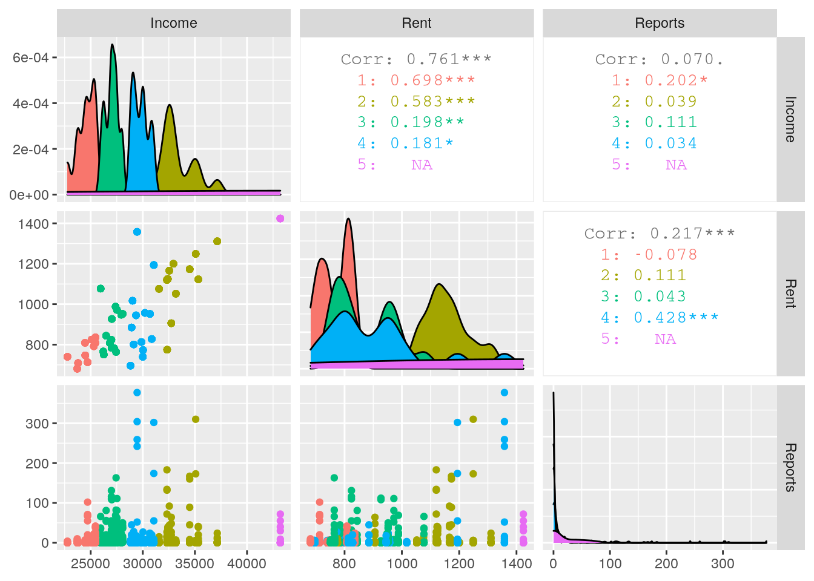
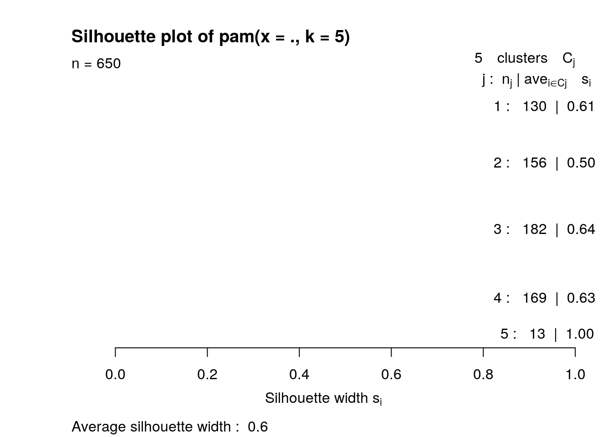

The two datasets chosen for this project was US Hate Crime Data and us_rent_income in order to determine if there is a relationship between the state's median rent and income and different types of hate crimes. In US Hate Crime Data, there is a count of the different types of hate crimes in each state in 2017. In us_rent_income, there are the estimated values of the median yearly income and the median monthly rent of each state in 2017 along with the 90% margin of error. The us_rent_income was found in the tidyr package and was compiled by the U.S Census Bureau; the US Hate Crime Data was found on the FBI's Criminal Justice Information Services Division website.
I chose these datasets in order to answer a question that I've had for a while: is it true that a lack of money can lead someone to commit crimes? I believe that the lack of money for necessities can drive some people to commit minor crimes for items they need but I'm not sure how it could affect major types of crimes. My guess is that it has somewhat of an effect, but not as great as compared to minor crimes.
library(tidyverse)
library(tidyr)
usrentincome <- as.data.frame(us_rent_income)
glimpse(usrentincome)## Rows: 104
## Columns: 5
## $ GEOID <chr> "01", "01", "02", "02", "04", "04", "05", "05", "06", "06", …
## $ NAME <chr> "Alabama", "Alabama", "Alaska", "Alaska", "Arizona", "Arizon…
## $ variable <chr> "income", "rent", "income", "rent", "income", "rent", "incom…
## $ estimate <dbl> 24476, 747, 32940, 1200, 27517, 972, 23789, 709, 29454, 1358…
## $ moe <dbl> 136, 3, 508, 13, 148, 4, 165, 5, 109, 3, 109, 5, 195, 5, 247…hatecrimes <- read_csv("Hate Crime Data.csv")
glimpse(hatecrimes)## Rows: 53
## Columns: 15
## $ State <chr> "Total", "Alabama", "Alask…
## $ `Total Offenses` <dbl> 8437, 9, 4, 328, 8, 1270, …
## $ `Murder and\nnonnegligent\nmanslaughter` <dbl> 15, 0, 0, 0, 0, 3, 0, 0, 0…
## $ Rape <dbl> 23, 0, 0, 2, 0, 0, 1, 0, 0…
## $ `Aggravated\nassault` <dbl> 990, 0, 1, 52, 1, 242, 22,…
## $ `Simple\nassault` <dbl> 1745, 1, 1, 62, 1, 259, 30…
## $ Intimidation <dbl> 2283, 7, 0, 111, 2, 304, 3…
## $ `Human\nTrafficking\nCommercial\nSex Acts` <dbl> 1, 0, 0, 0, 0, 0, 0, 0, 0,…
## $ Robbery <dbl> 157, 0, 0, 8, 1, 52, 3, 2,…
## $ Burglary <dbl> 145, 0, 0, 6, 1, 16, 0, 1,…
## $ `Larceny-\ntheft` <dbl> 326, 0, 0, 5, 0, 6, 3, 10,…
## $ `Motor\nvehicle\ntheft` <dbl> 41, 0, 0, 0, 0, 0, 0, 2, 0…
## $ Arson <dbl> 42, 0, 0, 0, 0, 11, 1, 0, …
## $ `Destruction/\ndamage/\nvandalism` <dbl> 2325, 1, 2, 81, 2, 377, 36…
## $ `Crimes against Society` <dbl> 238, 0, 0, 1, 0, 0, 0, 2, …Looking at the datasets, I can see that some tidying needs to be done. Here is my code for the tidying and untidying for each. The usrentincome is already tidy so I will un-tidy it and then re-tidy it. To un-tidy it, I pivotted wider to give each variable its' own column and I renamed them to create better column titles. Then, I went back and tidied the dataset using the pivot longer function; this is where I gave every variable its' own row next to its' estimated value. I removed 2 rows from the tidied dataset that included NAs to keep it clean.
usri_untidy <- usrentincome %>% pivot_wider(names_from = "variable",
values_from = c("estimate", "moe")) %>% select(Name = NAME,
Income = estimate_income, Rent = estimate_rent, `Income MOE` = moe_income,
`Rent MOE` = moe_rent)
usri_untidy %>% glimpse()## Rows: 52
## Columns: 5
## $ Name <chr> "Alabama", "Alaska", "Arizona", "Arkansas", "California"…
## $ Income <dbl> 24476, 32940, 27517, 23789, 29454, 32401, 35326, 31560, …
## $ Rent <dbl> 747, 1200, 972, 709, 1358, 1125, 1123, 1076, 1424, 1077,…
## $ `Income MOE` <dbl> 136, 508, 148, 165, 109, 109, 195, 247, 681, 70, 106, 21…
## $ `Rent MOE` <dbl> 3, 13, 4, 5, 3, 5, 5, 10, 17, 3, 3, 18, 7, 3, 3, 4, 5, 4…usri_tidy <- usri_untidy %>% pivot_longer(c(2:5), names_to = "Variable name",
values_to = "Estimate") %>% na.omit()
usri_tidy %>% glimpse()## Rows: 206
## Columns: 3
## $ Name <chr> "Alabama", "Alabama", "Alabama", "Alabama", "Alaska",…
## $ `Variable name` <chr> "Income", "Rent", "Income MOE", "Rent MOE", "Income",…
## $ Estimate <dbl> 24476, 747, 136, 3, 32940, 1200, 508, 13, 27517, 972,…hatecrimes is not tidy so I will go ahead with the tidying process. In this code, I pivotted longer in order to give every offense variable its' own column along with its' report counts next to each other. Again, I removed the 28 rows that included the NAs to maintain a clean dataset.
hc <- hatecrimes %>% pivot_longer(c(3:15), names_to = "Offense Type",
values_to = "Count") %>% na.omit()
hc %>% glimpse()## Rows: 663
## Columns: 4
## $ State <chr> "Total", "Total", "Total", "Total", "Total", "Total"…
## $ `Total Offenses` <dbl> 8437, 8437, 8437, 8437, 8437, 8437, 8437, 8437, 8437…
## $ `Offense Type` <chr> "Murder and\nnonnegligent\nmanslaughter", "Rape", "A…
## $ Count <dbl> 15, 23, 990, 1745, 2283, 1, 157, 145, 326, 41, 42, 2…In this section, I will join the two datasets after seeing how many observations are in each dataset.
usri_tidy %>% nrow()## [1] 206hc %>% nrow()## [1] 663hc %>% right_join(usri_tidy, by = c(State = "Name"))## # A tibble: 2,606 x 6
## State `Total Offenses` `Offense Type` Count `Variable name` Estimate
## <chr> <dbl> <chr> <dbl> <chr> <dbl>
## 1 Alaba… 9 "Murder and\nnonnegli… 0 Income 24476
## 2 Alaba… 9 "Murder and\nnonnegli… 0 Rent 747
## 3 Alaba… 9 "Murder and\nnonnegli… 0 Income MOE 136
## 4 Alaba… 9 "Murder and\nnonnegli… 0 Rent MOE 3
## 5 Alaba… 9 "Rape" 0 Income 24476
## 6 Alaba… 9 "Rape" 0 Rent 747
## 7 Alaba… 9 "Rape" 0 Income MOE 136
## 8 Alaba… 9 "Rape" 0 Rent MOE 3
## 9 Alaba… 9 "Aggravated\nassault" 0 Income 24476
## 10 Alaba… 9 "Aggravated\nassault" 0 Rent 747
## # … with 2,596 more rowshc %>% full_join(usri_tidy, by = c(State = "Name"))## # A tibble: 2,619 x 6
## State `Total Offenses` `Offense Type` Count `Variable name` Estimate
## <chr> <dbl> <chr> <dbl> <chr> <dbl>
## 1 Total 8437 "Murder and\nnonneglig… 15 <NA> NA
## 2 Total 8437 "Rape" 23 <NA> NA
## 3 Total 8437 "Aggravated\nassault" 990 <NA> NA
## 4 Total 8437 "Simple\nassault" 1745 <NA> NA
## 5 Total 8437 "Intimidation" 2283 <NA> NA
## 6 Total 8437 "Human\nTrafficking\nC… 1 <NA> NA
## 7 Total 8437 "Robbery" 157 <NA> NA
## 8 Total 8437 "Burglary" 145 <NA> NA
## 9 Total 8437 "Larceny-\ntheft" 326 <NA> NA
## 10 Total 8437 "Motor\nvehicle\ntheft" 41 <NA> NA
## # … with 2,609 more rows2619 - 2606## [1] 13fulldata <- hc %>% right_join(usri_tidy, by = c(State = "Name"))
fulldata %>% glimpse()## Rows: 2,606
## Columns: 6
## $ State <chr> "Alabama", "Alabama", "Alabama", "Alabama", "Alabama…
## $ `Total Offenses` <dbl> 9, 9, 9, 9, 9, 9, 9, 9, 9, 9, 9, 9, 9, 9, 9, 9, 9, 9…
## $ `Offense Type` <chr> "Murder and\nnonnegligent\nmanslaughter", "Murder an…
## $ Count <dbl> 0, 0, 0, 0, 0, 0, 0, 0, 0, 0, 0, 0, 1, 1, 1, 1, 7, 7…
## $ `Variable name` <chr> "Income", "Rent", "Income MOE", "Rent MOE", "Income"…
## $ Estimate <dbl> 24476, 747, 136, 3, 24476, 747, 136, 3, 24476, 747, …There are 206 observations in usri_tidy and 663 observations in hc. I did a right type of join of hc onto usri_tidy, because I wanted there to be matching data in the full dataset that couldn't be achieved through a full join. Likewise, I wanted observations that I didn't want to include from hc to leave. In my code, the fulldata returned all rows from usri_tidy and all columns from both usri_tidy and hc but rows in hc that didn't have a match in usri_tidy had NAs present in the columns. Because I did a right join rather than a full join, I lost 13 observations from hc, this will not have a great effect on the data as a whole because those lost observations were the total number of offenses of all states, which is what I wasn't looking for in my comparison.
In this section, I will be generating summary statistics for the variables. In order to properly compare the different variables, I pivotted wider on the Variable name to make the income and rent separate to compare them to the different types of offenses in each state. Then, I removed the total offenses and the MOEs columns in order to look strictly at each type using the select function.
fulldata2 <- fulldata %>% pivot_wider(names_from = "Variable name",
values_from = "Estimate") %>% select(-"Total Offenses", -"Income MOE",
-"Rent MOE", Reports = Count) %>% drop_na()
fulldata2 %>% head()## # A tibble: 6 x 5
## State `Offense Type` Reports Income Rent
## <chr> <chr> <dbl> <dbl> <dbl>
## 1 Alabama "Murder and\nnonnegligent\nmanslaughter" 0 24476 747
## 2 Alabama "Rape" 0 24476 747
## 3 Alabama "Aggravated\nassault" 0 24476 747
## 4 Alabama "Simple\nassault" 1 24476 747
## 5 Alabama "Intimidation" 7 24476 747
## 6 Alabama "Human\nTrafficking\nCommercial\nSex Acts" 0 24476 747This portion shows my code for my summary statistics.
fulldata2 %>% summarize(mean_rent = mean(Rent, na.rm = T), sd_rent = sd(Rent,
na.rm = T), n_distinct(Rent), mean_reports = mean(Reports,
na.rm = T), sd_reports = sd(Reports, na.rm = T), n_distinct(Reports),
mean_income = mean(Income, na.rm = T), sd_income = sd(Income,
na.rm = T), n_distinct(Income), min(Rent, na.rm = T),
max(Rent, na.rm = T), min(Income, na.rm = T), max(Income,
na.rm = T))## # A tibble: 1 x 13
## mean_rent sd_rent `n_distinct(Ren… mean_reports sd_reports `n_distinct(Rep…
## <dbl> <dbl> <int> <dbl> <dbl> <int>
## 1 930. 188. 47 12.8 37.5 82
## # … with 7 more variables: mean_income <dbl>, sd_income <dbl>,
## # `n_distinct(Income)` <int>, `min(Rent, na.rm = T)` <dbl>, `max(Rent, na.rm
## # = T)` <dbl>, `min(Income, na.rm = T)` <dbl>, `max(Income, na.rm = T)` <dbl>fulldata2 <- fulldata2 %>% mutate(income_dist = case_when(Income <
29577 ~ "low", Income <= 36388 & 29577 <= Income ~ "med",
Income > 36388 ~ "high")) %>% mutate(rent_dist = case_when(Rent <
812 ~ "low", Rent <= 1160 & 812 <= Rent ~ "med", Rent > 1160 ~
"high"))
fulldata2 %>% group_by(State, income_dist) %>% summarize(mean_rent = mean(Rent,
na.rm = T), mean_reports = mean(Reports, na.rm = T), mean_income = mean(Income,
na.rm = T))## # A tibble: 50 x 5
## # Groups: State [50]
## State income_dist mean_rent mean_reports mean_income
## <chr> <chr> <dbl> <dbl> <dbl>
## 1 Alabama low 747 0.692 24476
## 2 Alaska med 1200 0.308 32940
## 3 Arizona low 972 25.2 27517
## 4 Arkansas low 709 0.615 23789
## 5 California low 1358 97.7 29454
## 6 Colorado med 1125 10.4 32401
## 7 Connecticut med 1123 9.23 35326
## 8 Delaware med 1076 2.23 31560
## 9 District of Columbia high 1424 15.9 43198
## 10 Florida low 1077 12.8 25952
## # … with 40 more rowsfulldata2 %>% group_by(State) %>% summarise(n = n_distinct(Reports))## # A tibble: 50 x 2
## State n
## <chr> <int>
## 1 Alabama 3
## 2 Alaska 3
## 3 Arizona 10
## 4 Arkansas 3
## 5 California 10
## 6 Colorado 7
## 7 Connecticut 8
## 8 Delaware 5
## 9 District of Columbia 7
## 10 Florida 7
## # … with 40 more rowsfulldata2 %>% group_by(`Offense Type`) %>% top_n(6, Income) %>%
summarise(mean(Income))## # A tibble: 13 x 2
## `Offense Type` `mean(Income)`
## <chr> <dbl>
## 1 "Aggravated\nassault" 36403.
## 2 "Arson" 36403.
## 3 "Burglary" 36403.
## 4 "Crimes against Society" 36403.
## 5 "Destruction/\ndamage/\nvandalism" 36403.
## 6 "Human\nTrafficking\nCommercial\nSex Acts" 36403.
## 7 "Intimidation" 36403.
## 8 "Larceny-\ntheft" 36403.
## 9 "Motor\nvehicle\ntheft" 36403.
## 10 "Murder and\nnonnegligent\nmanslaughter" 36403.
## 11 "Rape" 36403.
## 12 "Robbery" 36403.
## 13 "Simple\nassault" 36403.tidycor <- fulldata2 %>% select(is.numeric) %>% as.data.frame() %>%
cor()
tidycor %>% data.frame()## Reports Income Rent
## Reports 1.00000000 0.06955025 0.2168433
## Income 0.06955025 1.00000000 0.7608792
## Rent 0.21684326 0.76087918 1.0000000cormat <- fulldata2 %>% select_if(is.numeric) %>% cor(use = "pair")
tidycor <- cormat %>% as.data.frame %>% rownames_to_column("var1") %>%
pivot_longer(-1, names_to = "var2", values_to = "correlation")
tidycor## # A tibble: 9 x 3
## var1 var2 correlation
## <chr> <chr> <dbl>
## 1 Reports Reports 1
## 2 Reports Income 0.0696
## 3 Reports Rent 0.217
## 4 Income Reports 0.0696
## 5 Income Income 1
## 6 Income Rent 0.761
## 7 Rent Reports 0.217
## 8 Rent Income 0.761
## 9 Rent Rent 1There were 47 unique rent values, 82 report values, and 50 income values. Across the states, the mean rent was 930.12 dollars with a standard deviation of 187.6363, the mean reports were 12.81692 with a standard deviation of 37.51189, and the mean income was 29128.06 dollars with a standard deviation of 3893.092 dollars. The rent values ranged from 681 to 1424 dollars and the incomes across states range from 22766 to 43198 dollars. Grouping by the state and distribution of income had no effect on the mean rent, income, or reported crimes. Then, the top 6 most reported offense types had a mean income of 36402.67, and the most reported crimes were in California categorized as being "destruction, damage, and vandalism." A correlation matrix was made and it depicted that income and rent correlate well to each other but they both do not correlate well to the amount of crimes reported.
Here is a visual correlation heatmap for the numeric variables of the dataset.
tidycor %>% ggplot(aes(var1, var2, fill = correlation)) + geom_tile() +
scale_fill_gradient2(low = "black", mid = "white", high = "maroon") +
geom_text(aes(label = round(correlation, 4)), color = "black",
size = 5) + theme(axis.text.x = element_text(angle = 0,
hjust = 1)) + coord_fixed() From the heat map, I can see that income and rent do not correlate well to the amount of crimes reported. Income has a very small, almost non-existent correlation to reported crimes whereas rent has a small (but not as small as income's) correlation. However, income and rent have a high correlation towards each other, which is already known.
Now, we will get a chance to look at all variables in the next couple of plots.
fulldata2 %>% ggplot(aes(Reports, `Offense Type`)) + geom_bar(stat = "summary",
aes(color = income_dist)) + theme_minimal()
fulldata2 %>% ggplot(aes(Reports, State)) + geom_tile(stat = "identity",
aes(color = rent_dist)) In this plot, we see that the most reported crimes are destruction/damage/vandalism. Likewise, most reports occur in low income areas. Majority of the crimes that are highly reported are a bit violent in nature.
(could not finish)
Looking at the three numeric variables, Rent, Income, and Reports, I performed k-means/PAM clustering. The code is listed below.
library(cluster)
clust_dat <- fulldata2 %>% dplyr::select(Income, Rent, Reports)
sil_width <- vector()
sil_width <- vector()
for (i in 2:10) {
kms <- kmeans(clust_dat, centers = i)
sil <- cluster::silhouette(kms$cluster, dist(clust_dat))
sil_width[i] <- mean(sil[, 3])
}
ggplot() + geom_line(aes(x = 1:10, y = sil_width)) + scale_x_continuous(name = "k",
breaks = 1:10)
pam1 <- clust_dat %>% pam(k = 5)
pam1## Medoids:
## ID Income Rent Reports
## [1,] 1 24476 747 0
## [2,] 26 32940 1200 0
## [3,] 281 26987 824 12
## [4,] 637 29868 813 1
## [5,] 117 43198 1424 0
## Clustering vector:
## [1] 1 1 1 1 1 1 1 1 1 1 1 1 1 2 2 2 2 2 2 2 2 2 2 2 2 2 3 3 3 3 3 3 3 3 3 3 3
## [38] 3 3 1 1 1 1 1 1 1 1 1 1 1 1 1 4 4 4 4 4 4 4 4 4 4 4 4 4 2 2 2 2 2 2 2 2 2
## [75] 2 2 2 2 2 2 2 2 2 2 2 2 2 2 2 2 2 2 2 2 2 2 2 2 2 2
## [ reached getOption("max.print") -- omitted 550 entries ]
## Objective function:
## build swap
## 844.4478 745.8044
##
## Available components:
## [1] "medoids" "id.med" "clustering" "objective" "isolation"
## [6] "clusinfo" "silinfo" "diss" "call" "data"library(GGally)
fulldata2 %>% mutate(cluster = as.factor(pam1$clustering)) %>%
ggpairs(columns = c("Income", "Rent", "Reports"), aes(color = cluster))
library(dplyr)
plot(pam1, which = 2) When I performed the k-means/PAM clustering, I first processed my data and I chose my number of clusters using the silhouette method. This method depicted that the best number of clusters is the highest peak of the line in the graph, which was 5. At first, the line was not stabilizing but it eventually evened out to 5 clusters. Then, using PAM, I ran the cluster analysis as pam1, and received the values for the mediods. Then, I ran a ggplot that visualized the clusters in order to interpret them. Looking at the clusters, I saw that there was a greatly positive correlation between income and rent but these two did not correlate well with the reported crime values. Then, I looked at the average silhouette width to look at the goodness of fit of the model. With a average width of 0.6, the silhouette had a reasonable structure between the variables.